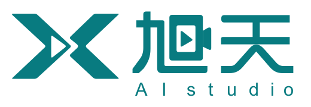
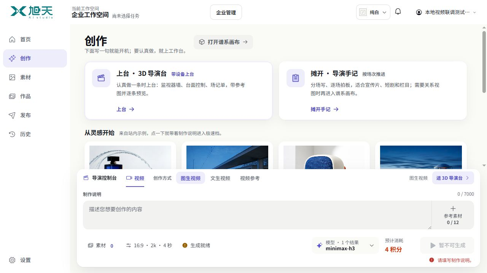
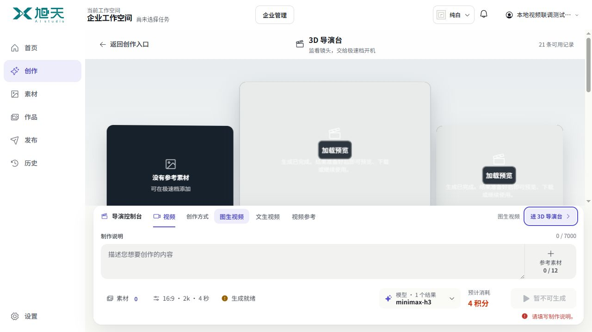
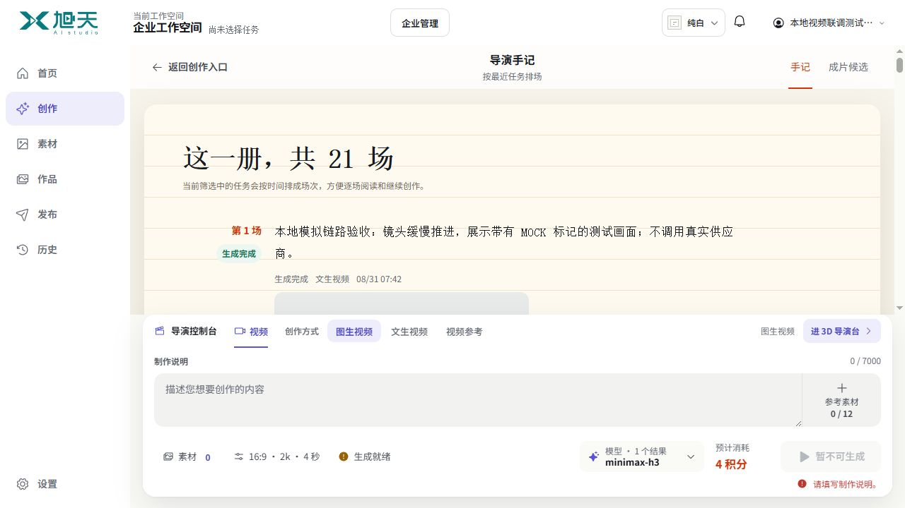
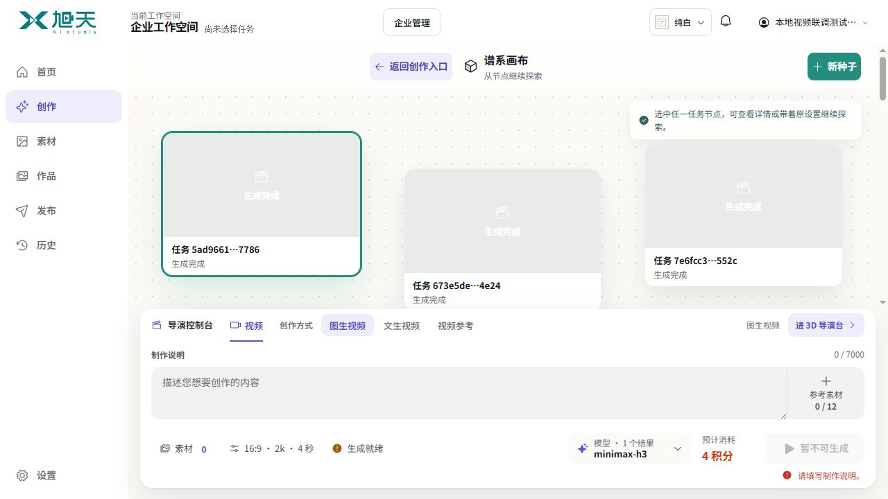

快捷创作
写一个想法，直接生成单条内容。
共享快捷创作栏首页与默认创作共用同一份草稿。
保留底部创作栏
查看布局 →
设计蓝图 · 尚未实现普通创作用共享底栏；进入 3D 导演台、导演手记或谱系画布，就在那里完成输入、调参和生成。共用能力与任务链路，不共用整条界面。
将「进 3D 导演台」从创作栏移走。三个高级入口在创作页并列；进入后使用顶部的返回／工作方式切换，不再借道底栏填写内容。
上半屏切三种工作台，下半屏始终是同一个输入框。“新建／续写”最终仍回到全局草稿；3D 页还有一个“进 3D 导演台”。
3D 编辑镜头，手记编辑场次，画布编辑节点。当前屏幕只有一个编辑焦点和一个生成动作，底层能力与计费保持一致。




src/App.jsx:4058,4409 只按首页／创作页决定显示底栏。src/App.jsx:4514 无条件保留 3D 跳转。
src/CreationHub.jsx:204,398 workbench 状态只切换上方视图。src/pages/studio/CreationWorkbenchViews.jsx:453,590,698 分别为只读参数、任务转场次、索引排节点。
src/App.jsx:2909–2955,3574,3773 新建／复用最后仍聚焦全局草稿。仅隐藏底栏，会切断现有编辑路径。
四步为本轮真实桌面浏览器只读检查，不生成任务。可见风险包括浅色预览上的白字、重复状态和工作区被压缩；不据截图宣称完整无障碍或手机验收通过。关系数据结论限定于当前创作视图接线。
首页与默认创作页仍共享同一个快捷编辑器。工作方式与文生／图生等生成模式分层；底栏不再出现 3D 跳转。
从一句描述开始，也可以选一条灵感。
描述想要的画面、运动和节奏……
工作方式决定在哪创作；模型与文生／图生决定怎样生成，两者不混在同一排。
首页灵感写入同一快捷草稿。首页与默认创作之间切换，不清空输入或重复挂载。
普通进入恢复目标工作台。需要携带内容时，在入口区域选择“带当前草稿进入”，不偷偷覆盖。
三个高级入口收进“工作方式”。快捷创作维持单焦点：看结果时收起编辑，写作时专注提示词，素材与参数逐层展开。
把现在的只读历史说明，变成当前镜头的台内编辑面。3D 空间服务监看、参考与版本比较，不是不可操作的设备装饰。
预览、下载与存为参考跟随当前镜头。“上一版”不再指任意一条历史任务。
镜头贴近水面缓慢推进，水珠掠过音箱的织物表面，背景保持自然、安静。
选镜头后编辑它的草稿。重拍产生新版本，已完成任务的原请求保持只读。
写场记 → 调参数 → 报价 → 生成 → 看结果 → 再拍。参考、输入、结果不再分属两个页面区域。
监视器负责比较，素材托盘负责参考，场记单负责编辑。保留空间感，不添加假机位与无用旋钮。
默认看镜头；点击“编辑本镜头”切到同一路由内的场记单。监看与写作互切，参数一次只展开一组，不复活公共底栏。
一场是一个创作单元，可以包含多次生成。阅读、改稿和生成都在这一场发生，不把历史任务编号当成剧本结构。
从溪水的纹理切到音箱表面，镜头停在细密的织物与水珠上。光线柔和，画面克制。
场次有自己的标识与顺序。改变历史筛选，不会把第二场变成第五场。
直接改场文，按需展开参考与参数。生成结果回到本场版本区，不打断整本手记。
每场可选已验证结果；没有真实拼接任务与产物时，只称“已选镜头”，不承诺成片。
场次目录收进标题旁；当前场占满阅读面。编辑、预览与生成都在这一场中完成，不另挂全局输入框。
新想法建立种子，续写建立分支。节点承载草稿、任务或结果；连线表示真实来源，而不是两张卡片碰巧相邻。
内容与关系均为蓝图示意，尚非生产数据。
来自一个想法，或明确选择的历史结果。
保持产品与场景，镜头进一步贴近织物和水珠，减少背景信息。
保留来源、任务状态和版本。可以再建分支，不覆盖源节点。
只展开当前节点，其他节点保持紧凑。无来源证据的历史任务作为独立节点，不自动连线。
新种子创建草稿节点；从此节点续写，在它旁边建立子节点并展开编辑。
“复用设置”复制参数；“以结果为参考”需先把验证过的产物转成合法参考资产。边标明操作来源。
保存节点、派生边和坐标。时间先后不构成谱系，不把最近任务列表伪装成图谱。
浏览可平移画布，选择后切到节点专属编辑面；完成后返回原位置。不挤出一个小输入框，也不调用公共底栏。
这是建议的数据与交互结构，不是已实现功能。Platform／Relay 的权限、模型能力、计费与幂等边界保持不变。
| 位置 | 可见编辑面 | 草稿与结果归属 |
|---|---|---|
| 首页／默认创作 | 同一个 Quick Composer | 当前身份＋工作空间的一份快捷草稿 |
| 3D 导演台 | 当前镜头的场记单 | 镜头 → 草稿与各版任务 |
| 导演手记 | 当前场次的纸页编辑区 | 手记 → 场次 → 草稿与多个拍摄版本 |
| 谱系画布 | 当前节点的展开编辑区 | 画布 → 草稿／结果节点＋有证据的派生边 |
普通进入恢复目标工作台上次的位置。明确选择“带当前草稿进入”或“在另一工作台继续”，才复制成新草稿；目标已有内容不被覆盖，返回仍保留原快捷草稿。
从 App 的内联 UI 中分离能力协调、上传、报价、提交与轮询。四种编辑面使用同一数据结构和基础控件，按镜头／场次／节点绑定草稿；不是把整条底栏换地方。
输入类型、数量与规格取自 effective_capabilities，不支持的隐藏，单值只读。带入历史设置要重新协调、校验和报价，旧任务的原请求保持不变。
上传、报价与提交绑定工作空间、草稿标识和版本。晚到上传回原草稿；完成结果回原镜头／场次／节点，而不是用户当下打开的地方。
显示“正在确认提交”，冻结该提交版本并按原记录确认。换路由不重发，不跨模型重试，不再次扣费。失败保留草稿，明确重试才再发起。
沿用当前 workbench 路由但让壳层感知它。不渲染全局 Quick Composer，也不保留它的网格行、高度、隐藏焦点和手机启动器。草稿由上层状态保存，不靠屏外 DOM。
旧任务显式导入。场次顺序、节点与边、版本归属及坐标需要持久化契约。先复用现有项目能力，再补缺失部分；不凭任务时间推断关系。
保留快捷创作体验，提取共享逻辑，用镜头场记单验证输入、生成、结果和再次创作的完整循环。
在 Platform 明确最小持久化与权限契约，接入手记／画布后再退役旧回调，不用展示层假数据补洞。
覆盖模型切换、晚到上传、报价过期、未知提交、权限、刷新、后退；390／320px 不遮挡，无失效入口。
旧测试中“所有创作视图挂全局栏”及“工作台不直接生成”的规则，待设计确认后随行为一起调整。本轮只交付蓝图，不改这些测试、生产源码、配置或冻结候选。